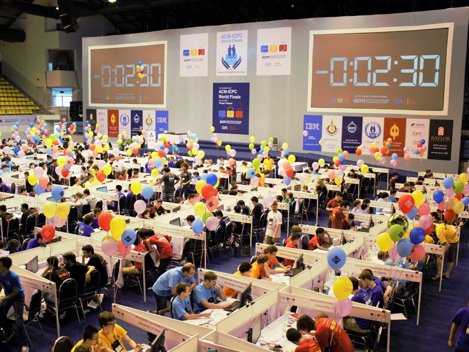
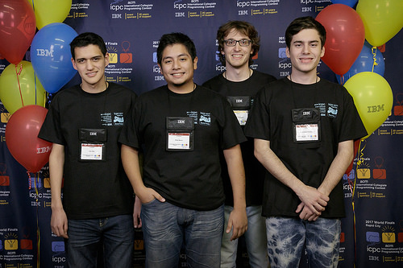
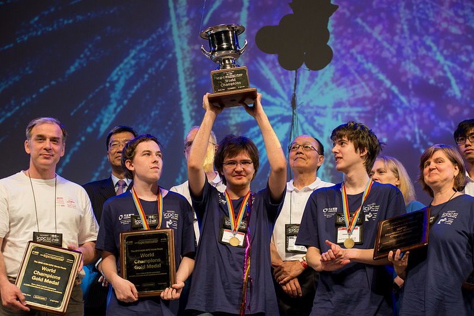
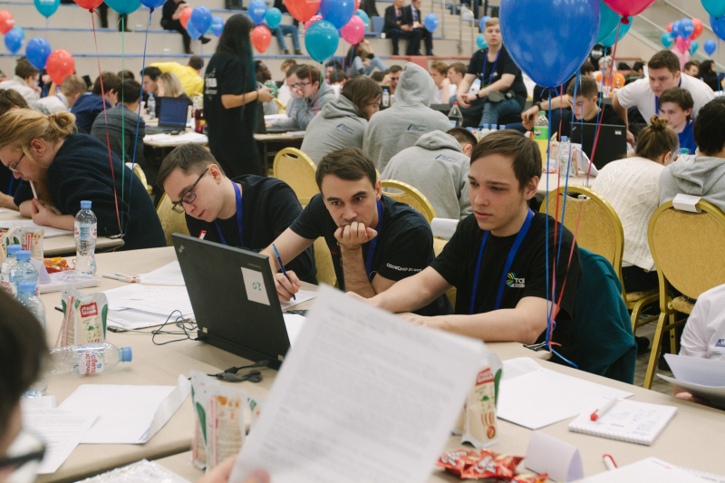
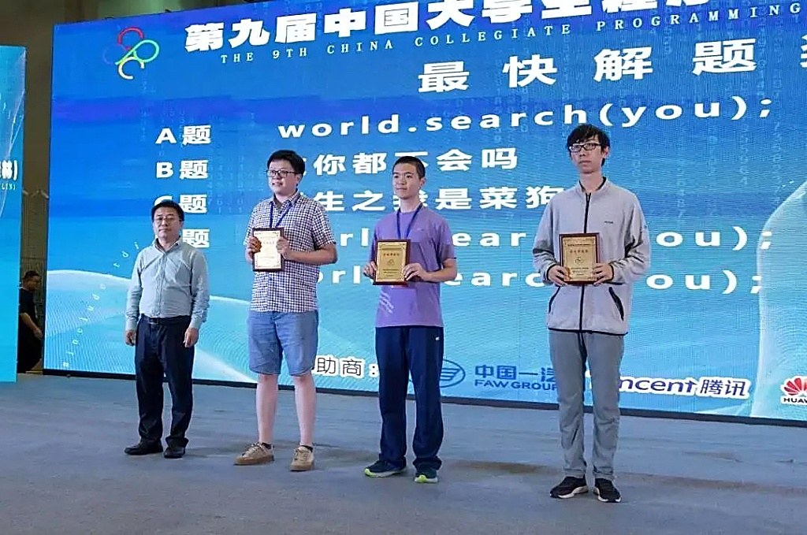
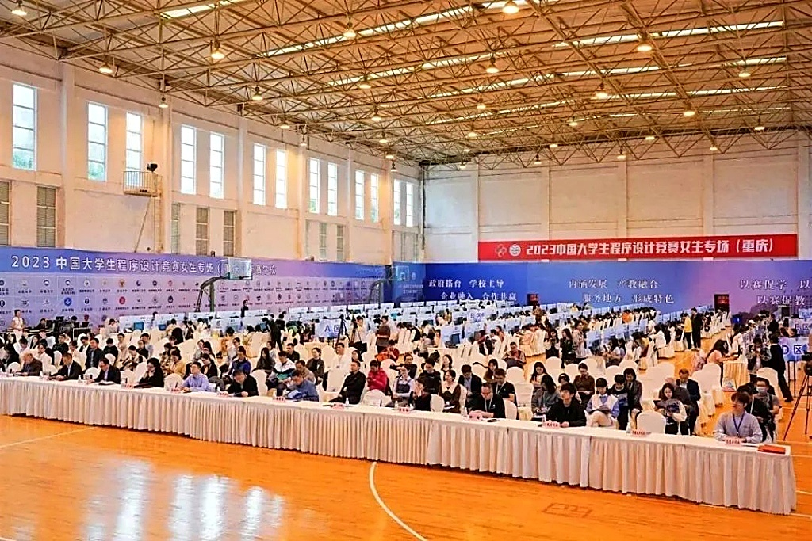
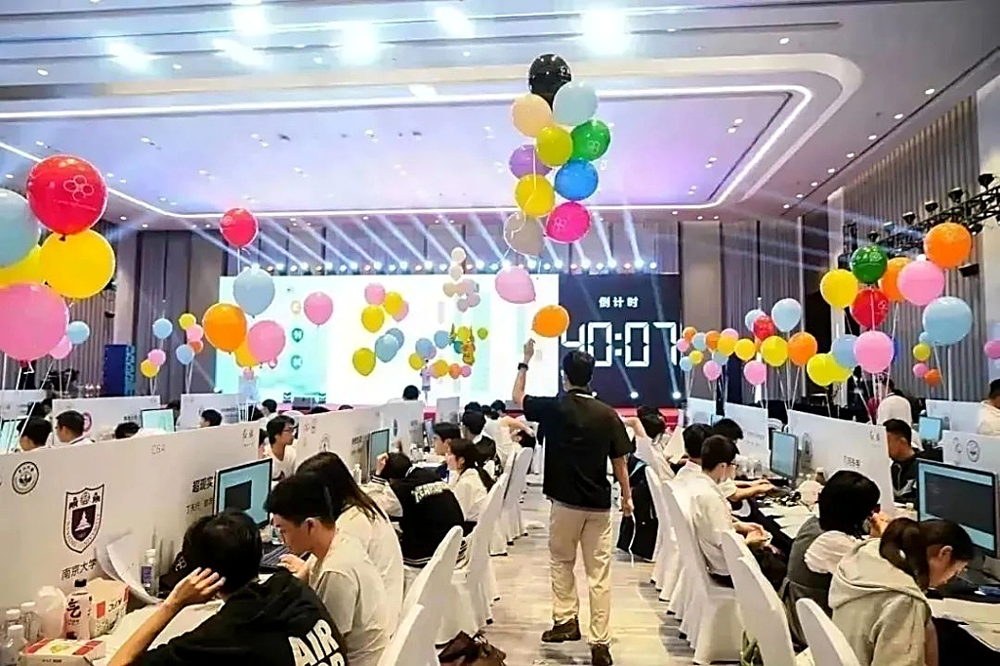
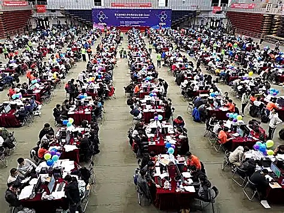

了解全球与全国最顶级的计算机大学生程序设计竞赛
国际大学生程序设计竞赛（International Collegiate Programming Contest，简称 ICPC）是世界上规模最大、水平最高、最受瞩目的年度大学生程序设计竞赛。该赛事代表着全球大学生算法与计算思维竞赛的巅峰，被广泛誉为计算机领域的“奥林匹克”。
ICPC 是一项以 3 人团队为单位的编程对抗赛，旨在激发大学生的算法兴趣，并为他们提供一个与全球顶级同辈学者切磋技艺、锻炼抗压协作能力的舞台。该竞赛也是全球各大顶尖企业选拔最顶尖软件研发人才的绝佳“练兵场”。
竞赛规制：每支参赛团队共 3 名队员，在长达 5 小时的封闭时间内，仅能共用 1 台电脑。团队需要通力协作，设计算法模型解答 10 至 13 道复杂的英文题目。成功通过全部 secret 测试点的队伍会实时获得气球奖励，以解题数最多且用时最短者获胜。








中国大学生程序设计竞赛（China Collegiate Programming Contest，简称 CCPC）是由教育部高等学校计算机类专业教学指导委员会主办的全国性顶级学术赛事。赛事旨在通过精心设计的算法挑战，培养与选拔我国高水平的计算机应用与系统开发人才。
CCPC 于 2015 年发起成立。作为中国本土含金量最高的大学生编程竞赛，它不仅完全移植了 ICPC 的顶级裁判系统和竞赛机制，更是针对国内计算机课程教育体系进行了针对性优化，是国内高校在算法人才培养维度的核心评估标准。
竞赛规模：CCPC 如今已建立了多层级的全国竞赛网络，包含分省赛（Provincial）、全国邀请赛（Invitational）、分站赛（Regional）以及全国总决赛（Final）。每年吸引全国近 500 所一流高校、上万名最顶级的计算机学子参与激烈的现场对抗。
了解 ICPC 与 CCPC 赛事的起源、重要节点及发展演进。
首届大学生程序设计比赛在德克萨斯 A&M 大学举办，由 UPE 计算机荣誉学会发起，标志着全球算法竞赛时代的开端。
首次 ICPC 世界总决赛（World Finals）在 ACM 计算机科学会议期间成功举行，赛制步入国际规范化，参赛学校迅速扩大。
ICPC 总部建立在贝勒大学（Baylor University），由著名教练 Bill Poucher 教授主持，赛事进入真正的全球性扩张阶段。
ICPC 亚洲分站赛在国内高校广泛设立，中国选手的参与度大幅提升，并开始在世界总决赛舞台上展露头角，多次夺取全球金牌。
为适应国内算法人才培养需要，国内多所顶尖高校联合创办了 CCPC 赛事，完全对标 ICPC 规则，极大地普及了国内程序设计文化。
CCPC 迎来了第 11 届赛事体系，ICPC 参与人数与高校数亦打破历史记录。XCPC 依旧是全球和全国最顶级的计算机学子梦寐以求的最高竞技殿堂。